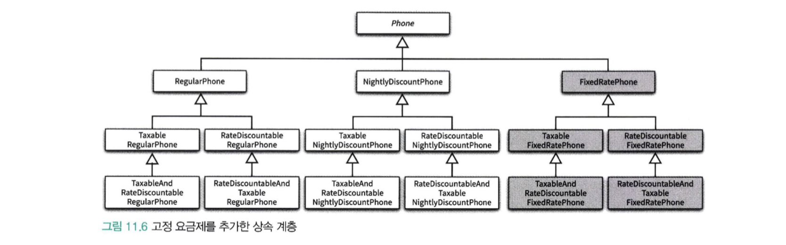
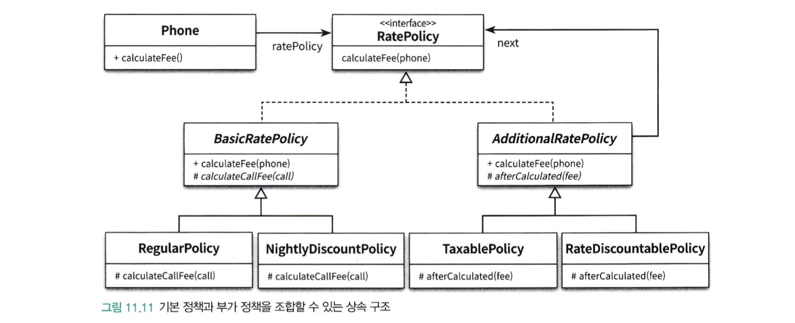
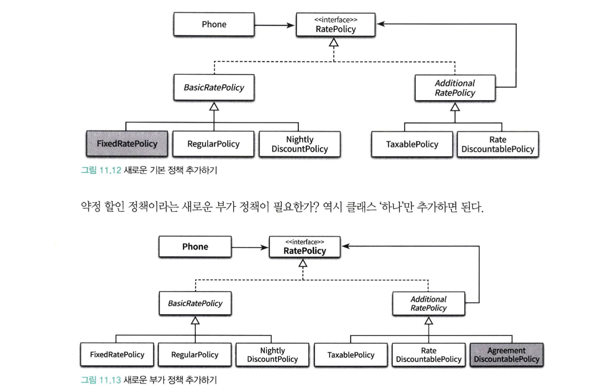
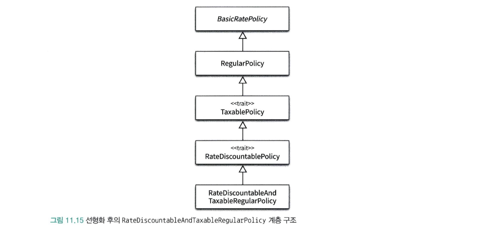

상속과 합성
상속과 합성은 객체지향 프로그래밍에서 가장 널리 사용되는 코드 재사용 기법이다.
- 상속
- 부모 클래스와 자식 클래스를 연결해서 부모 클래스의 코드를 재사용한다
- 컴파일 타임 의존성을 가진다 (정적인 관계)
- is-a 관계
- 부모 클래스의 내부 구현에 대해 상세히 알아야하기 때문에 자식 클래스와 부모 클래스 사이의 결합도가 높아진다.
- 부모 클래스에 구현된 코드를 재사용한다
- 합성
- 전체를 표현하는 객체가 부분을 표현하는 객체를 포함해서 부분 객체의 코드를 재사용한다
- 런타임 의존성을 가진다 (동적인 관계)
- has-a 관계
- 클래스와 클래스간의 퍼블릭 인터페이스에 의존하여 결합도가 낮다.
- 내부 구현의 변경의 영향이 최소화 된다
- 객체의 퍼블릭 인터페이스를 재사용한다
코드 작성 시점에 결정된 상속 관계는 런타임에 변경이 불가하지만 합성 관계는 실행 시점에 동적으로 변경할 수 있기 때문에
상속 대신 합성을 사용하면 변경하기 쉽고 유연한 설계를 얻을 수 있다.
화이트박스 재사용 (white-box reuse)
상속으로 인한 재사용을 일컫는다. 상속을 받으면 부모 클래스의 내부가 자식 클래스에 공개되기 때문에 화이트 박스인 셈이다.
블랙박스 재사용 (black-box reuse)
합성으로 인한 재사용을 일컫는다. 합성 시에는 객체의 내부는 공개되지 않고 인터페이스를 통해서만 재사용되기 때문이다.
상속을 합성으로 변경하기
코드의 재사용을 위해 상속을 남용하는 경우 발생하는 문제점은 아래와 같다.
- 불필요한 인터페이스 상속문제
- 메서드 오버라이딩 오작용 문제
- 부모 클래스와 자식 클래스의 동시 수정 문제
합성을 사용하면 상속이 초래하는 문제점을 해결할 수 있다.
상속을 합성으로 바꾸는 방법은 자식 클래스에 선언된 상속 관계를 제거하고 부모 클래스의 인스턴스를 자식 클래스의 인스턴스 변수로 선언하면 된다.
불필요한 인터페이스 상속문제
상속을 이용한 Stack에서는 부모클래스에서 제공하는 퍼블릭 인터페이스 때문에 Stack의 규칙을 위반할 수 있다.
Vector는 임의의 위치(index)에서 요소를 조회하고, 추가하고, 삭제할 수 있는 get, add, remove 오퍼레이션을 제공한다.
1 | Stack<String> stack = new Stack<>(); |
기존 상속을 이용하던 Stack을 합성으로 바꿔보았다.
1 | public class Stack<E> { |
이제 Vector의 퍼블릭 인터페이스는 Stack에 포함되지 않는다.
클라이언트는 더 이상 임의의 위치에 요소를 추가하거나 삭제할 수 없다. 따라서 Stack의 규칙을 깰 수 있는 요소가 없게 된다.
메서드 오버라이딩의 오작용 문제: InstrumentedHashSet
상속을 이용한 기존 InstrumentedHashSet
1 | public class InstrumentedHashSet<E> extends HashSet<E> { |
기존에 상속을 이용하던 InstrumentedHashSet을 합성으로 바꿔보았다.
1 | public class InstrumentedHashSet<E> { |
위 과정까지는 위의 Stack의 예제와 같다.
하지만 InstrumentedHashSet은 기존의 HashSet의 퍼블릭 인터페이스까지 제공을 해야한다.
이를 해결하기 위해 아래와 같이 코드를 작성하였다.
1 | public class InstrumentedHashSet<E> { |
포워딩 메서드(forwarding method)
위와 같이 오퍼레이션을 오버라이딩한 인스턴스 메서드에서 내부의 HashSet 인스턴스에게 동일한 메서드 호출을 그대로 전달하는 것을 알 수 있다.
이를 포워딩(forwarding) 이라 부르고 동일한 메서드를 호출하기 위해 추가된 메서드를 포워딩 메서드(forwarding method) 라고 부른다.
포워딩은 기존 클래스의 인터페이스를 그대로 외부에 제공하면서 구현에 대한 결합 없이 일부 작동 방식을 변경하고 싶은 경우에 사용하는 유용한 기법이다.
상속으로 인한 조합의 폭발적인 증가
상속으로 인해 결합도가 높아지면 코드를 수정하는 데 필요한 작업의 양이 과도하게 증가할 수 있다.
일반적으로 작은 기능들을 조합해서 더 큰 기능을 수행하는 객체를 만들어야 하는 경우이다.
- 하나의 기능을 추가하거나 수정하기 위해 불필요하게 많은 수의 클래스를 추가하거나 수정해야 한다.
- 단일 상속만 지원하는 언어에서는 상속으로 인해 오히려 중복 코드의 양이 늘어날 수 있다.

위의 이미지와 같이 상속의 남용으로 모든 케이스에 대한 조합을 클래스로 표현하는 경우를 가리켜 클래스 폭발(class explosion)이라 한다. 또는 조합의 폭발이라 한다.
클래스 폭발 문제는 자식 클래스가 부모 클래스의 구현에 강하게 결합되도록 강요하는 상속의 근본적인 한계로 인해 발생하는 문제다.
클래스 폭발 문제는 새로운 기능을 추가하는 경우에는 많은 코드를 변경해야 할 뿐만 아니라 기능을 추가하는 경우에도 기하급수적으로 클래스가 생성될 수 있다.
합성 관계로 변경하기
상속 관계는 컴파일타임에 결정되고 고정되기 때문에 코드를 실행하는 도중에는 변경할 수 없다.
따라서 여러 기능을 조합해야하는 설계에 상속을 이용하면 모든 조합 가능한 경우별로 클래스를 추가해야한다.
하지만 합성을 사용하면 컴파일 관계를 런타임 관계로 변경함으로써 이 문제를 해결한다.
합성을 사용하면 구현이 아닌 퍼블릭 인터페이스에 대해서만 의존할 수 있기 때문에 런타임에 객체의 관계를 변경할 수 있다.
따라서 합성을 사용하면 구현 시점에 관계를 고정시킬 필요가 없으며 실행 시점에 정책들의 관계를 유연하게 변경할 수 있다.
컴파일 의존성에 속박되지 않고 다양한 방식의 런타임 의존성을 구성할 수 있다는 것이 합성이 제공하는 가장 커다란 장점이다.
위의 상속관계로 나온 case를 합성을 사용하면 아래와 같이 사용할 수 있다.


믹스인
믹스인(mixin)은 객체를 생성할 때 코드 일부를 클래스 안에 섞어 넣어 재사용하는 기법을 가리키는 용어다.
합성이 실행 시점에 객체를 조합하는 재사용 방법이라면 믹스인은 컴파일 시점에 필요한 코드 조각을 조합하는 재사용 방법이다.
믹스인은 상속과는 다르다
믹스인이 상속이 유사한 것 처럼 보이겠지만 사실은 다르다.
상속의 결과로 부모 클래스의 코드를 재사용한다는 사실은 맞지만 상속의 목적은 자식 클래스를 부모 클래스와 동일한 개념적인 범주로 묶어 is-a 관계를 만들기 위한 것이다.
반면 믹스인은 말 그래로 코드를 다른 코드 안에 섞어 넣기 위한 방법이다.
상속이 클래스와 클래스 사이의 관계를 고정시키는 데 비해 믹스인은 유연하게 관계를 재구성 할 수 있다.
믹스인은 코드 재사용에 특화된 방법이면서도 상속과 같은 결합도 문제를 초래하지 않는다.
믹스인의 유래
믹스인은 Flavors라는 언어에서 처음으로 도입됐고 이후 Flavors의 특징을 흡수한 CLOS(Common Lisp Object System)에 의해 대중화됐다.
트레이트(trait)
스칼라 언어에서 제공하는 믹스인 기법이다.
간단하게 설명하면 trait는 super 라는 코드가 부모클래스 하나를 고정하지 않는다.
super는 런타임에 달라질 수 있으며 실제로 trait가 믹스인 되는 시점에 결정된다. (실행시점에 결정)
1 | trait RateDiscountablePolicy extends BasicRatePolicy { |
위의 예제에서 super는 BasicRatePolicy의 클래스 어떤 것이든 될 수 있다.
BasicRatePolicy 클래스이든, BasicRatePolicy를 상속한 자식 클래스이든 trait에 대한 코드를 믹스인 할 수 있다.
트레이트의 선형화
스칼라는 특정 클래스에 믹스인한 클래스와 트레이트를 선형화해서 어떤 메서드를 호출할 지 결정한다.
클래스의 인스턴스를 생성할 때 스칼라는 클래스 자신과 조상 클래스, 트레이트를 일렬로 나열해서 순서를 정한다.
그리고 실행 중인 메서드 내부에서 super 호출을 하면 다음 단계에 위치한 클래스나 트레이트의 메서드가 호출된다.
1 | class RateDiscountableAndTaxableRegularPolicy( |
위와 같은 클래스에서는 아래와 같이 선형화 된다.

만약 RateDiscountableAndTaxableRegularPolicy 인스턴스가 calculateFee 메시지를 수신했다고 가정하면 RateDiscountableAndTaxableRegularPolicy에는 calculateFee 메서드가 없기 때문에 다음 단계에 위치한 RateDiscountablePolicy에서 calculateFee 메서드가 존재하는지 찾는다.
RateDiscountablePolicy에서 calculateFee를 찾으면 실행한다.
RateDiscountablePolicy에서 또 super.calculateFee를 호출하기 때문에 위의 단계인 TaxablePolicy의 calculateFee 메서드를 찾는다.
이렇게 올라가다 보면 BasicRatePolicy의 기본요금부터 재귀호출 되듯이 코드가 실행되며 내려오기 때문에 금액 계산이 순차적으로 된다.
만약 RateDiscountablePolicy와 TaxablePolicy의 순서를 바꾸고 싶다면
1 | class RateDiscountableAndTaxableRegularPolicy( |
아래와 같이 코드를 변경하여 선형화된 순서를 바꿀 수 있다.
믹스인을 사용하더라도 클래스 폭발이 남아있는 것인가?
믹스인을 사용하더라도 상속에서 클래스의 숫자가 기하급수적으로 늘어나는 클래스 폭발 문제는 여전히 남아있는게 아니냐고 반문할 수 있다.
클래스 폭발 문제의 단점은 클래스가 늘어난다는 것이 아니라 클래스가 늘어날수록 중복 코드도 함께 기하급수적으로 늘어난다는 점이다.
믹스인은 이런 문제가 발생하지 않는다.
또 클래스를 만들지 않고도 믹스인을 사용할 수 있다.
1 | new RegularPolicy(Money(100), Duration.ofSecond(10)) |
하지만 코드 여러 곳에서 동일한 트레이트를 믹스인해서 사용해야 한다면 명시적으로 클래스를 정의하는게 좋다.
쌓을 수 있는 변경
믹스인은 상속 계층 안에서 확장한 클래스보다 더 하위에 위치하게 된다.
다시 말해 믹스인은 대상 클래스의 자식 클래스처럼 사용될 용도로 만들어 지는 것이다.
1 | class RateDiscountableAndTaxableRegularPolicy( |
위의 코드 처럼 trait를 믹스인한 with 구문은 항상 extends 구문 뒤에 나온다.
믹스인을 사용하면 특정한 클래스에 대한 변경 또는 확장을 독립적으로 구현한 후 필요한 시점에 차례대로 추가할 수 있다.
믹스인의 이러한 특징을 쌓을 수 있는 변경(stackable modification) 이라고 부른다.
참고
- Objects(코드로 이해하는 객체지향 설계) - chapter11. 합성과 유연한 설계